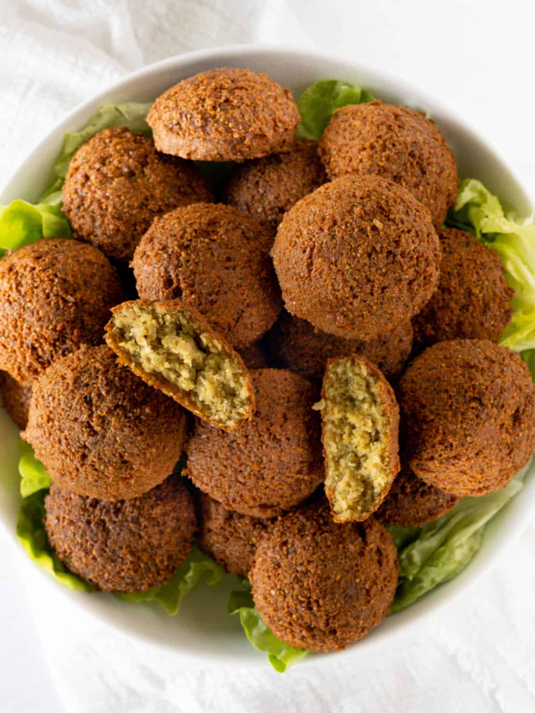

Falafel

Description
Indulge in the delightful crunch of homemade falafel, a beloved Middle Eastern dish that combines a crispy exterior with a tender, flavorful interior. These golden-brown bites are perfect for snacking or as a filling addition to wraps and salads. Each bite bursts with aromatic spices and fresh herbs, creating a harmonious blend of taste and texture. Whether served with a creamy tahini sauce or nestled in a warm pita, this falafel recipe is sure to impress and satisfy your cravings for something both hearty and wholesome. Perfect for sharing at gatherings or enjoying as a quick meal, it's a dish that brings joy to any table.
Ingredients
- 200g dried chickpeas
- 3 garlic
- onion, roughly chopped
- 1tsp ground cumin
- 2tsp ground coriander
- bicarbonate of soda
- 4tbsp sesame seeds
- vegetable oil
- sumac, to serve (optional)
Steps
- STEP 1: Put the chickpeas in a bowl and cover with water. Leave to soak overnight, changing the water at least twice, if possible.
- STEP 2: Blitz the garlic and onion in a food processor, then add the drained chickpeas and whizz to a fairly smooth paste. Add the spices and mix well, then stir through the bicarbonate of soda and sesame seeds. Season well.
- STEP 3: Fill a pan no more than a third full with vegetable oil and heat to 180C or until a cube of bread browns in 30 seconds.
- STEP 4: Shape a little of the falafel mixture into an oval shape with a tablespoon, then gently push into the oil using another spoon. Do this with a few more spoonfuls of the mixture. Cook, in batches, for 4 minutes or until deep golden and crisp. Repeat with the remaining mixture. Serve sprinkled with sumac, if you like.
Enjoy your homemade Falafel!